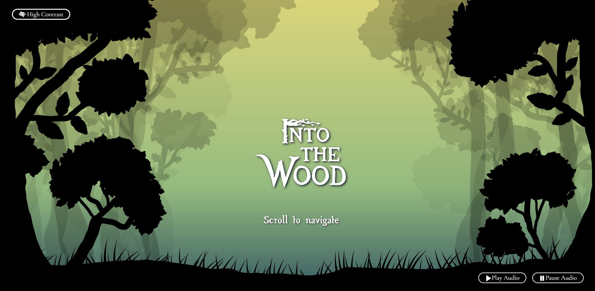
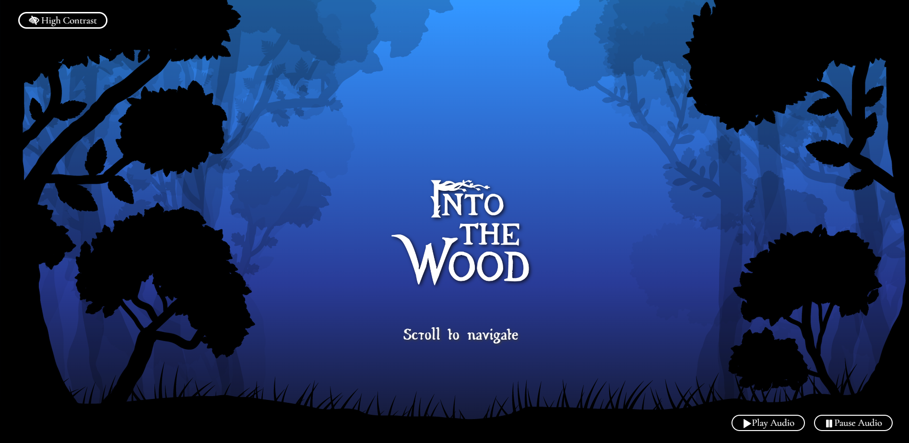
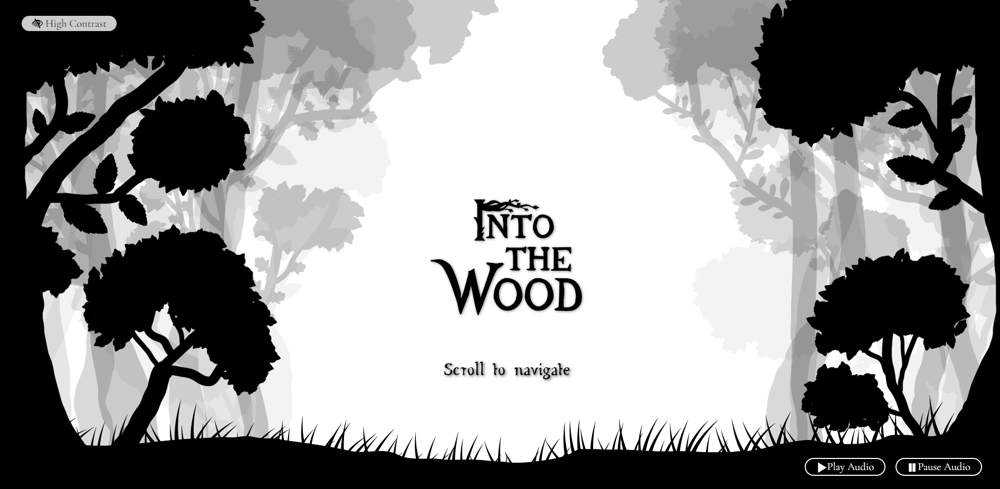

INTO THE WOOD
OVERVIEW
"Into The Wood" is an browser-based interactive artwork that takes audiences through the forest by scrolling.
With the simple illustrations tree silhouette and concise quotes, the webpage shows its clear objective of sending the messages about saving the trees, saving environment.
This is the work produced during the earlier state of my front-end developing with HTML, CSS and JavaScript learning process, showcases the development of my skills over the semesters of RMIT Digital Media.
OBJECTIVES
- Accessing & Using Visitor Data
- Web Accessibility
- Cross-Browser Compatibility
- Audio Element
- Thought of Digital Carbon Footprint
RESULT
The interface of the webpage starts with the edge of the wood, and audiences will be taken further into the wood by scrolling down.
The webpage’s focused audiences can be anyone, corresponds with the purpose of spreading knowledge and awareness to people. The objective is to inspire an emotional response, and deliver education about the important of trees, forests, environment and the problems around them in today's world.
To meet the requirement for accessing and using visitor data, the clock data in JavaScript was used to make the webpage responsive to the time with day and night mode. The background of the work, indicates the environment around the forest that changes based on the time users access the work, with the daytime and nighttime versions.
The audio element, the sound effect of the forest atmosphere used to provide the feeling of a living environment, is also changed according to users' computer time.

Daytime mode

Nighttime mode
The high-contrast toggle button was created to provide users with a more accessible version of the website where everything is kept monochrome to maximise the contrast between visual elements to make life easier for people with for people with some other kinds of visual impairments.

High-contrast mode
The webpage was developed with the thought of substainability, with the minimal visual and audio elements to decrease the amount of digital carbon footprint it leaves on the Internet.